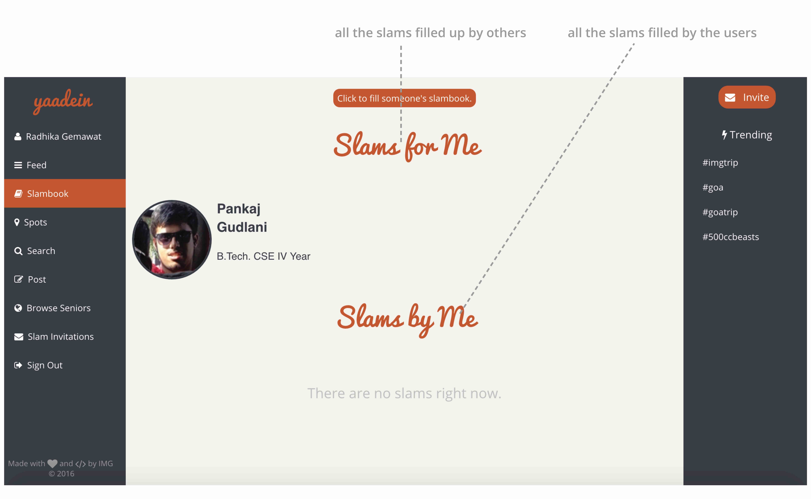

ABOUT
Serving the purpose of memoir, the project aims to provide the user with an experience which takes them all the way down to memory lane. The project features mainly: Slam-book and a Scrapbook.
Besides, the user can post their experiences, search and invite fellowmates to write their slam, and download a Scrapbook entailing all their experiences in a fashioned order.
As a designer, my requirements were to change the feel of existing yaadein; and add a feature of slambook.
WIREFRAMING
Since the project was already exisiting, I decided to create low-fidelity wireframes with six different colour-schemes which helped me get a better understanding of the overall feel of the project.
These wireframes were constructed on the basis of the exisiting app already. My job was to rebrand the current flow with ground colours to absorb the feel of graduation; which is remarked by nostalgia and remembrance .
REBRANDING
Once the scheme of the project was decided, various elements of the design were implemented.
Typography:
Pacifico and Helvetica fonts were the typeface of choice. This is used in the headings, buttons and some text elements on the site.
Iconography:
Icons were imported from the framework of Font-awesome directly.
Colour Palette:
A set of colours with a vintage aura were chosen to embark upon an experience of memoirs.
DESIGN ELEMENTS
Navigation
When I took up the project, the navigation existed in dual form. However the tabs of "slambook", "browse seniors" and "slam invitations" were well executed under my team. We decided to dedicate a whole tab for slambooks wherein all the slams are displayed in a moda-display mode. Browse seniors was to facilitate users to search for all the seniors graduating that year. Slam Invitations provided a display wherein all the requests to fill their slams were displayed. It was a feature only meant for the graduating year.
Slambook
Filling slambook form.
Displaying all the slams.
Scrapbook
First version of slambook was presented in this way:
However, this representation seemed out to be dull and didn't build up the mood for convocation. Multiple fellowmates who were about to graduate were asked if this brought them down to nostalgia or any related emotion. This design could not incite any raw emotion towards college or graduation-feel.
The final cover page:
Scrapbook entries, contaning the slam entries and posts.
Theme of the scrapbook, pertaining to main building of IIT Roorkee. Sensitivity towards the colour palette and architectural vocabulary has been inculcated in the design.
FINAL OUTCOME
The app was launched during the season of convocation. More than 400 slambook entries were made, and approximately 200 people downloaded the scrapbook.